硬體
∗ LCD 4Bit
∗ LCD Timing(VBPD、VFBD、VSPW、HBPD、HFPD、HSPW)
⊕ USB
∗ HID EndPoint
∗ Keyboard scancode
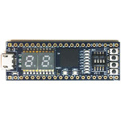
(FPGA) Lattice MXO2-4000HC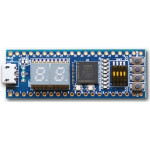
(FPGA) Altera MAX10 10M02SCM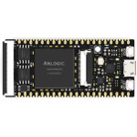
(FPGA) Lichee Tang∗ Pinout
∗ Patch Anlogic TD License
∗ 安裝Anlogic TD(Tang Dynasty)
∗ 編譯燒錄Hummingbird E203(蜂鳥E203)
∗ Verilog
∗ LED
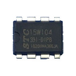
(MCU 8051) STC15W104∗ 開發板
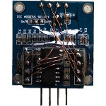
(MCU 8051) STC15W204S∗ 逆向STC-ISP V6.85I(IDA Pro)
∗ 逆向STC-ISP V6.85I(Bus Hound)
∗ 如何透過N900使用UART燒録程式
∗ 如何透過Pandora使用UART燒録程式
∗ 如何透過Windows使用UART燒録程式
⊕ 基本I/O
∗ PCB設計
∗ 程式設計
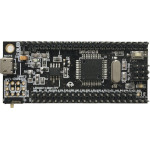
(MCU 8051) STC15W4K56S4∗ 點屏(1.30" TFT 240x240 ST7789V)
∗ 點屏(1.45" TFT 240x240 ST7789V)
∗ 點屏(1.54" IPS 240x240 ST7789V)
∗ 點屏(2.00" IPS 320x240 JBT6K71-AS)
∗ 點屏(2.80" IPS 320x240 S6D04M0X21)
∗ 點屏(3.50" IPS 320x480 ILI9488)
∗ 點屏(0.96" OLED 128x64 SSD1306)
∗ 點屏(1.50" OLED 128x128 SSD1351)
∗ 點屏(1.54" ePaper 152x152 Black-Yellow)
∗ 點屏(1.54" ePaper 200x200 Black-Red)
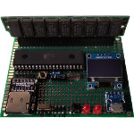
(MCU 8051) AT89S51∗ 開發板
∗ 開發環境
∗ LED測試程式
∗ Assembly
∗ 指令集
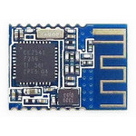
(MCU 8051) CC254x∗ Build CC-Tool
∗ 如何透過N900使用CC-Debugger燒錄程式(CC-Tool)
∗ 如何透過Pandora使用CC-Debugger燒錄程式(CC-Tool)
⊕ Smart-RF
⊕ C/C++
∗ LED
∗ Button
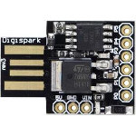
(MCU AVR) ATtiny85∗ 開發環境
∗ 開發板電路圖
∗ C/C++
⊕ Basic
∗ GPIO Output
∗ GPIO Input
∗ Assembly
⊕ Basic
∗ Instruction Set
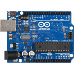
(MCU AVR) Arduino UNO∗ UART 921600bps
∗ Arduino IDE添加Attiny85
∗ Arduino IDE添加Atmega88
∗ 更新Arduino Micro Bootloader
∗ 更新KTduino Nano(CH340G) Bootloader
∗ 修復USB ISP(zhifengsoft)無法使用avrdude的問題
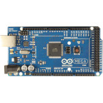
(MCU AVR) Arduino MEGA∗ UART 921600bps
 (MCU 6502) R65C02
(MCU 6502) R65C02
∗ 開發板
∗ Opcode
⊕ STC15F204EA
開發環境
七段顯示器測試
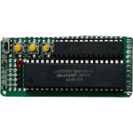
(MCU Z80) LH0080A∗ 開發板
⊕ STC15F204EA
開發環境
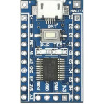
(MCU STM8) STM8S103∗ 安裝開發環境
∗ LED測試程式
∗ ADC測試程式
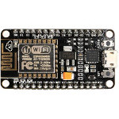
(MCU Tensilica) ESP8266MOD∗ Flash Image
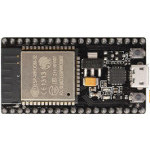
(MCU Tensilica) ESP-WROOM-32∗ Flash Image
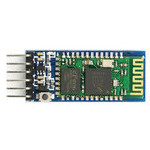
(MCU CSR) HC-05∗ 更新韌體程式
∗ 如何在N900設定成COM Port
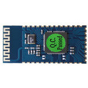
(MCU SPP) SPP-CA∗ 如何在N900設定成COM Port
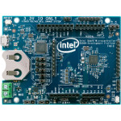
(Intel x86) Intel Quark D2000∗ 連接OpenOCD
∗ 連接OpenOCD + GDB
∗ Build Intel Quark Bootloader
∗ Build Intel Quark Microcontroller Software Interface(QMSI)
⊕ C/C++
∗ Hello, world!
ARM
∗ 中斷表
∗ Reverse zImage
∗ (Keil C)Hex轉Bin
∗ 解決"crt1.o: No such file or directory"問題
∗ 解決"./autogen.sh: 4: autoreconf: not found"問題
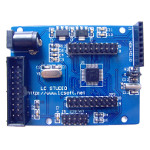
(ARM 7) LPC2103∗ 開發板
∗ LED測試程式
∗ Button測試程式
∗ build lpc21isp
∗ 如何使用lpc21isp燒錄
∗ 如何在Linux下使用Flash Magic
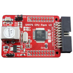
(ARM 7) AT91SAM7S64∗ 開發板
∗ LED測試程式
∗ Button測試程式
∗ 如何使用SAM-BA燒錄
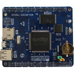
(ARM 9) NUC972∗ Flash SPI
∗ Flash NAND
∗ Build UBoot
∗ Build Kernel
∗ Build NuWriter
∗ Boot from SDCard
∗ Framebuffer Console
∗ 更換螢幕(2.8吋 IPS S6D04M0X21)
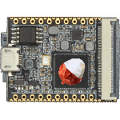
(ARM 9) Lichee Pi Nano∗ Flash Image(SDCard)
∗ Build UBoot
∗ Build sunxi-tools
∗ Build Kernel 4.14.0
∗ 簡單的LED驅動程式(GPIO)
∗ 如何將UBoot的輸出訊息轉到UART1
∗ 點屏(1.50" TFT 480x240 OTA5182A)
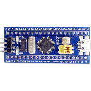
(ARM Cortex-M3) STM32F103∗ 腳位
∗ 開發機
∗ Overclock 128MHz
∗ Pull-up/Pull-Down
∗ Debug STM32 on Debian x64
∗ (Keil) 修改UART Baudrate(外部震盪器)
∗ 驅動2.8吋IPS 320x240顯示屏(S6D04M0X21)
∗ 如何使用N900透過ST-LINK V2燒錄程式(OpenOCD)
∗ 如何使用N900透過ST-LINK V2除錯程式(OpenOCD + GDB)
∗ 解決"Cannot insert breakpoint 1. Cannot access memory at address xxx"問題
∗ 解決"Error: jtag status contains invalid mode value - communication failure"問題
 (ARM Cortex-M4) STM32F429 Discovery
(ARM Cortex-M4) STM32F429 Discovery
∗ 接腳說明
∗ Build All
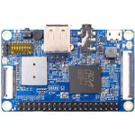
(ARM Cortex-A5) Orange Pi 2G-IoT∗ Build All
∗ Build Buildroot
∗ Build Uboot(PDL1、PDL2)
∗ Create UBI.img
∗ Flash Image(NAND)
∗ Pinout(LCD)
∗ Pinout(Panel)
∗ Pinout(Camera)
∗ Pinout(Header)
∗ Pinout(DIP Switch)
∗ 如何輸出詳細的Kernel訊息
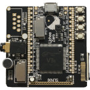
(ARM Cortex-A7) Lichee Pi Zero∗ SDCard分區
∗ SPI Flash分區
∗ Flash Image(SPI)
∗ Flash Image(SDCard)
∗ Build UBoot
∗ Build sunxi-tools
∗ Build Kernel 4.10.15
∗ 簡單的LED驅動程式(GPIO)
∗ 如何將UBoot的輸出訊息轉到UART1
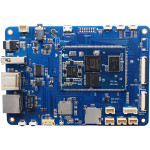
(ARM Cortex-A7) A33 Vstar∗ Build All
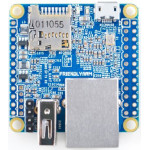
(ARM Cortex-A7) NanoPi NEO∗ Build All
∗ Build sunxi-tools
∗ 解決無法在x86編譯的問題
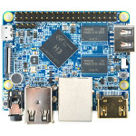
(ARM Cortex-A7) NanoPi M1∗ Flash Image(SDCard)
∗ Build All
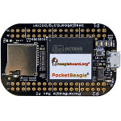
(ARM Cortex-A8) PocketBeagle∗ 腳位
∗ 開發機
∗ 如何製作開機SDCard
∗ build uboot 201507
∗ build uboot 201910
∗ build kernel 4.14.108
∗ build buildroot
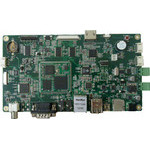
(ARM Cortex-A8) TMS320DM3730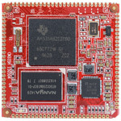
(ARM Cortex-A8) CM3354∗ 開發板
∗ 製作SDCard開機片
∗ 從SDCard燒錄到Nand(經由UBoot)
∗ Build UBoot
∗ Build Kernel 4.1.18
∗ 驅動2.4吋IPS 320x240顯示屏(ST7789V)(Raster)
∗ 解決buildroot無法登入的問題
∗ 解決顯示在LCD上面的圖形會緩慢移動的問題
∗ 解決"Frame Synchronization Lost Enabled Interrupt"問題
∗ 解決"VFS: Cannot open root device "mmcblk0p2" or unknown-block"
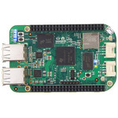
(ARM Cortex-A8) BeagleBone Green Wireless∗ Pinout
∗ PinMux表
∗ Build All
∗ Build GDB
∗ Build PCSX ReARMed
∗ Flash Image
∗ 製作出最精簡的系統
∗ 簡單的LED驅動程式(GPIO)
∗ 簡單的LED驅動程式(Register)
∗ 簡單的Keyboard驅動程式(Polling)
∗ 驅動2.0吋IPS 320x240顯示屏(ILI9335)(GPIO)
∗ 驅動2.0吋IPS 320x240顯示屏(ILI9335)(Register)
∗ 移植FCEU 0.98.13
∗ 移植PCM5102A音效驅動程式
∗ 移植Framebuffer顯示驅動程式(DMA)
∗ 移植Framebuffer顯示驅動程式(Polling)
∗ 為何LCD Ping-Pongs Buffer顯示會閃爍
∗ 解決LIDD DMA在中斷後無法啟動的問題
∗ 解決"ERROR: "__clk_get_name" ... undefined!"
∗ 解決SDL_PollEvent()無法取得Keyboard Event的問題
∗ 解決"Unhandled fault: ... non-linefetch (0x1028)"
∗ 解決PCSX ReARMed(--platform=generic)無法執行遊戲的問題
∗ 解決"ERROR: "clk_register_min_divider" ... undefined!"
∗ 解決"gzgetc error: request for member 'next' ... union"
∗ 解決"error: SDL_SysWMinfo ... has no member named info"
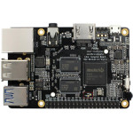
(ARM Cortex-A17) ROC-RK3328-CC∗ Build All
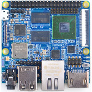
(ARM Cortex-A53) NanoPi M3∗ Flash Image(SDCard)
∗ Build UBoot
∗ Build Kernel
 (ARM Cortex-A53) Raspberry Pi3
(ARM Cortex-A53) Raspberry Pi3
∗ Build Kernel(On N900)
∗ Build Kernel(On x64 Debian)
∗ 驅動2.0吋IPS 320x240顯示屏(ILI9335)
⊕ Debian
∗ 3.5吋320x480電阻觸控、無線鍵盤
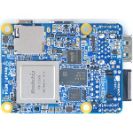
(ARM Cortex-A53 + Cortex-A72) NanoPi NEO4MIPS
∗ Register
⊕ OPCode
∗ MIPS I
∗ MIPS II
∗ MIPS III
∗ MIPS IV
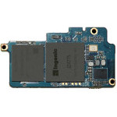
(MIPS II) Newton∗ 開發板
∗ UART輸出
∗ Flash Image
∗ Build UBoot
∗ Build Kernel
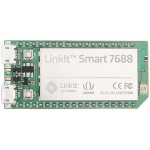
(MIPS 24KEc) LinkIt Smart MT7688∗ 為何系統一直重啟
∗ 簡單的LED驅動程式
∗ 簡單的GPIO Input驅動程式(ISR)
∗ 簡單的Keyboard驅動程式(Polling)
∗ 驅動2.0吋IPS 320x240顯示屏(ILI9335)(GPIO)
∗ 驅動2.0吋IPS 320x240顯示屏(ILI9335)(Register)
∗ 驅動3.0吋LCM 160x160顯示屏(UC1698U)(Register)
∗ 移植SDL 1.2.15
∗ 移植Framebuffer顯示驅動程式
∗ Build UBoot
∗ Build gnuboy
∗ Build fceu320
∗ Build OpenWRT
∗ Build zlib 1.2.8
∗ Build Kernel 3.18.44
∗ 如何產生LinkIt7688-squashfs-sysupgrade.bin
∗ Fix "mt_wifi.ko_3.18.45 No such file or directory"
∗ Fix "node_modules/mraa/* No such file or directory"
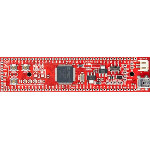
(MIPS M4K) UBW32 PIC32MX795F512L∗ 安裝XC32
∗ 安裝MPLAB X
∗ LED測試程式
RISC-V
∗ Register
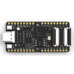
(RISC-V IMAFDC) MAIX Bit AI K210∗ Pinout
∗ 使用kflash燒錄
∗ Build Kendryte Standalone SDK
∗ 連接OpenOCD(SiPEED USB-JTAG/TTL)
∗ 連接OpenOCD + GDB(SiPEED USB-JTAG/TTL)
⊕ C/C++
∗ Hello, world!
∗ LED
∗ Button